Chapter 11: Race and Ethnicity¶
Introduction¶
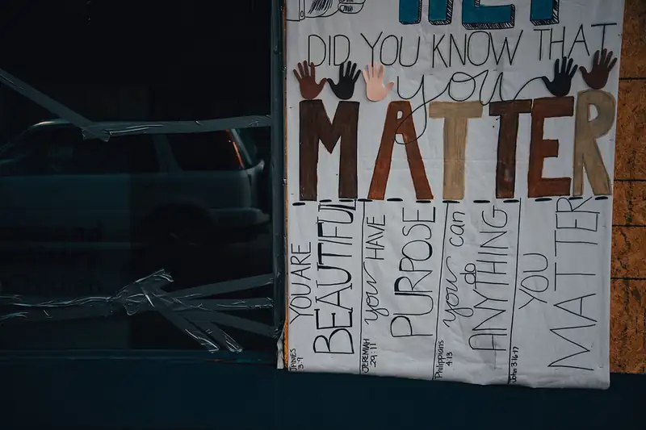
Trayvon Martin was a seventeen-year-old Black teenager. On the evening of February 26, 2012, he was visiting with his father and his father’s fiancée in the Sanford, Florida multi-ethnic gated community where his father's fiancée lived. Trayvon went on foot to buy a snack from a nearby convenience store. As he was returning, George Zimmerman, a White Hispanic man and the community’s neighborhood watch program coordinator, noticed him. In light of a recent rash of break-ins, Zimmerman called the police to report a person acting suspiciously, which he had done on many other occasions. During the call, Zimmerman said in reference to suspicious people, "[expletive] punks. Those [expletive], they always get away." The 911 operator told Zimmerman not to follow the teen, as was also stated in the police neighborhood watch guidelines that had been provided to Zimmerman. But Zimmerman did follow the teen, and, soon after, they had a physical confrontation. Several people in the community heard yelling, cries for help, and saw two people on the ground. According to Zimmerman, Martin attacked him, and in the ensuing scuffle, Zimmerman shot and killed Martin (CNN Library 2021).
A public outcry followed Martin’s death. There were allegations of racial profiling—the use of race alone to determine whether to detain or investigate someone. As part of the initial investigation, Zimmerman was extensively interviewed by police, but was released under Florida's "Stand Your Ground" Law, which indicated police could not arrest him for his actions. About six weeks later, Zimmerman was arrested and charged with second-degree murder by a special prosecutor, Angela Corey, who had been appointed by Florida's governor. In the ensuing trial, he was found not guilty (CNN Library 2021).
The shooting, the public response, and the trial that followed offer a snapshot of the sociology of race. Do you think race played a role in Martin’s death? Do you think race had an influence on the initial decision not to arrest Zimmerman, or on his later acquittal? Does society fear Black men, leading to racial profiling at an institutional level?
11.1 Racial, Ethnic, and Minority Groups¶
Learning Objectives
By the end of this section, you should be able to:
- Understand the difference between race and ethnicity
- Define a majority group (dominant group)
- Define a minority group (subordinate group)
While many students first entering a sociology classroom are accustomed to conflating the terms “race,” “ethnicity,” and “minority group,” these three terms have distinct meanings for sociologists. The idea of race refers to superficial physical differences that a particular society considers significant, while ethnicity describes shared culture. And the term "minority groups" describe groups that are subordinate, or that lack power in society regardless of skin color or country of origin. For example, in modern U.S. history, the elderly might be considered a minority group due to a diminished status that results from popular prejudice and discrimination against them. Ten percent of nursing home staff admitted to physically abusing an elderly person in the past year, and 40 percent admitted to committing psychological abuse (World Health Organization 2011). In this chapter we focus on racial and ethnic minorities.
What Is Race?¶
A human race is a grouping of humankind based on shared physical or social qualities that can vary from one society to another.
Historically, the concept of race has changed across cultures and eras, and has eventually become less connected with ancestral and familial ties, and more concerned with superficial physical characteristics. In the past, theorists developed categories of race based on various geographic regions, ethnicities, skin colors, and more. Their labels for racial groups have connoted regions or skin tones, for example.
German physician, zoologist, and anthropologist Johann Friedrich Blumenbach (1752-1840) introduced one of the famous groupings by studying human skulls. Blumenbach divided humans into five races (MacCord 2014):
- Caucasian or White race: people of European, Middle Eastern, and North African origin
- Ethiopian or Black race: people of sub-Saharan Africans origin (sometimes spelled Aethiopian)
- Malayan or Brown race: people of Southeast Asian origin and Pacific Islanders
- Mongolian or Yellow race: people of all East Asian and some Central Asian origin
- American or Red race: people of North American origin or American Indians
Over time, descriptions of race like Blumenbach's have fallen into disuse, and the social construction of race is a more accepted way of understanding racial categories. Social science organizations including the American Association of Anthropologists, the American Sociological Association, and the American Psychological Association have all officially rejected explanations of race like those listed above. Research in this school of thought suggests that race is not biologically identifiable and that previous racial categories were based on pseudoscience; they were often used to justify racist practices (Omi and Winant 1994; Graves 2003). For example, some people used to think that genetics of race determined intelligence. While this idea was mostly put to rest in the later 20th Century, it resurged several times in the past 50 years, including the widely read and cited 1994 book, The Bell Curve. Researchers have since provided substantial evidence that refutes a biological-racial basis for intelligence, including the widespread closing of IQ gaps as Black people gained more access to education (Dickens 2006). This research and other confirming studies indicate that any generally lower IQ among a racial group was more about nurture than nature, to put it into the terms of the Socialization chapter.
While many of the historical considerations of race have been corrected in favor of more accurate and sensitive descriptions, some of the older terms remain. For example, it is generally unacceptable and insulting to refer to Asian people or Native American people with color-based terminology, but it is acceptable to refer to White and Black people in that way. In 2020, a number of publications announced that they would begin capitalizing the names of races, though not everyone used the same approach (Seipel 2020). This practice comes nearly a hundred years after sociologist and leader W.E.B. Du Bois drove newsrooms to capitalize "Negro," the widely used term at the time. And, finally, some members of racial groups (or ethnic groups, which are described below) "reclaim" terms previously used to insult them (Rao 2018). These examples are more evidence of the social construction of race, and our evolving relationships among people and groups.
What Is Ethnicity?¶
Ethnicity is sometimes used interchangeably with race, but they are very different concepts. Ethnicity is based on shared culture—the practices, norms, values, and beliefs of a group that might include shared language, religion, and traditions, among other commonalities. Like race, the term ethnicity is difficult to describe and its meaning has changed over time. And as with race, individuals may be identified or self-identify with ethnicities in complex, even contradictory, ways. For example, ethnic groups such as Irish, Italian American, Russian, Jewish, and Serbian might all be groups whose members are predominantly included in the “White” racial category. Ethnicity, like race, continues to be an identification method that individuals and institutions use today—whether through the census, diversity initiatives, nondiscrimination laws, or simply in personal day-to-day relations.
In some cases, ethnicity is incorrectly used as a synonym for national origin, but those constructions are technically different. National origin (itself sometimes confused with nationality) has to do with the geographic and political associations with a person's birthplace or residence. But people from a nation can be of a wide range of ethnicities, often unknown to people outside of the region, which leads to misconceptions. For example, someone in the United States may, with no ill-intent, refer to all Vietnamese people as an ethnic group. But Vietnam is home to 54 formally recognized ethnic groups.
Adding to the complexity: Sometimes, either to build bridges between ethnic groups, promote civil rights, gain recognition, or other reasons, diverse but closely associated ethnic groups may develop a "pan-ethnic" group. For example, the various ethnic groups and national origins of people from Vietnam, Cambodia, Laos, and adjoining nations, who may share cultural, linguistic, or other values, may group themselves together in a collective identity. If they do so, they may not seek to erase their individual ethnicities, but finding the correct description and association can be challenging and depend on context. The large number of people who make up the Asian American community may embrace their collective identity in the context of the United States. However, that embrace may depend on people's ages, and may be expressed differently when speaking to different populations (Park 2008). For example, someone who identifies as Asian American while at home in Houston may not refer to themselves as such when they visit extended family in Japan. In a similar manner, a grouping of people from Mexico, Central America and South America—often referred to as Latinx, Latina, or Latino—may be embraced by some and rejected by others in the group (Martinez 2019).
What Are Minority Groups?¶
Sociologist Louis Wirth (1945) defined a minority group as “any group of people who, because of their physical or cultural characteristics, are singled out from the others in the society in which they live for differential and unequal treatment, and who therefore regard themselves as objects of collective discrimination.” The term minority connotes discrimination, and in its sociological use, the term subordinate group can be used interchangeably with the term minority group, while the term dominant group is often substituted for the group that represents rulers or is in the majority who can access power and privilege in a given society. These definitions correlate to the concept that the dominant group is that which holds the most power in a given society, while subordinate groups are those who lack power compared to the dominant group.
Note that being a numerical minority is not a characteristic of being a minority group; sometimes larger groups can be considered minority groups due to their lack of power. It is the lack of power that is the predominant characteristic of a minority, or subordinate group. For example, consider apartheid in South Africa, in which a numerical majority (the Black inhabitants of the country) were exploited and oppressed by the White minority.
According to Charles Wagley and Marvin Harris (1958), a minority group is distinguished by five characteristics: (1) unequal treatment and less power over their lives, (2) distinguishing physical or cultural traits like skin color or language, (3) involuntary membership in the group, (4) awareness of subordination, and (5) high rate of in-group marriage. Additional examples of minority groups might include the LGBTQ community, religious practitioners whose faith is not widely practiced where they live, and people with disabilities.
Scapegoat theory, developed initially from Dollard’s (1939) Frustration-Aggression theory, suggests that the dominant group will displace its unfocused aggression onto a subordinate group. History has shown us many examples of the scapegoating of a subordinate group. An example from the last century is the way Adolf Hitler blamed the Jewish population for Germany’s social and economic problems. In the United States, recent immigrants have frequently been the scapegoat for the nation’s—or an individual’s—woes. Many states have enacted laws to disenfranchise immigrants; these laws are popular because they let the dominant group scapegoat a subordinate group.
Multiple Identities¶
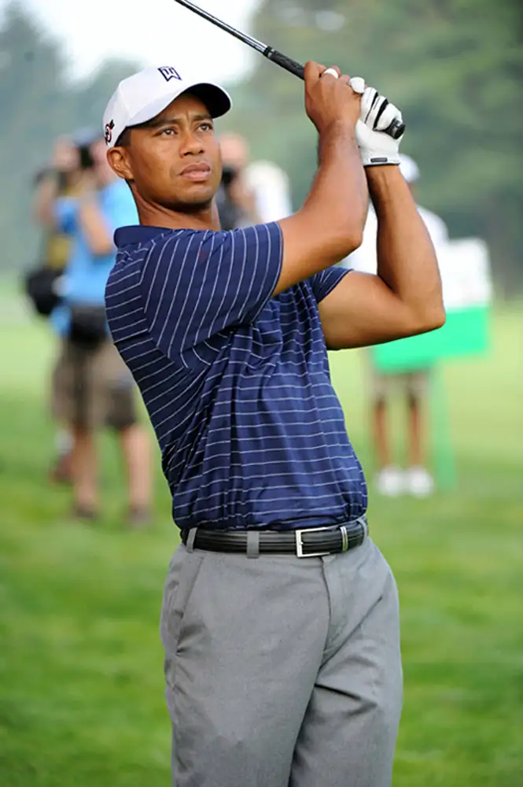
Prior to the twentieth century, racial intermarriage (referred to as miscegenation) was extremely rare, and in many places, illegal. While the sexual subordination of enslaved people did result in children of mixed race, these children were usually considered Black, and therefore, property. There was no concept of multiple racial identities with the possible exception of the Creole. Creole society developed in the port city of New Orleans, where a mixed-race culture grew from French and African inhabitants. Unlike in other parts of the country, “Creoles of color” had greater social, economic, and educational opportunities than most African Americans.
Increasingly during the modern era, the removal of miscegenation laws and a trend toward equal rights and legal protection against racism have steadily reduced the social stigma attached to racial exogamy (exogamy refers to marriage outside a person’s core social unit). It is now common for the children of racially mixed parents to acknowledge and celebrate their various ethnic identities. Golfer Tiger Woods, for instance, has Chinese, Thai, African American, Native American, and Dutch heritage; he jokingly refers to his ethnicity as “Cablinasian,” a term he coined to combine several of his ethnic backgrounds. While this is the trend, it is not yet evident in all aspects of our society. For example, the U.S. Census only recently added additional categories for people to identify themselves, such as non-White Hispanic. A growing number of people chose multiple races to describe themselves on the 2020 Census, indicating that individuals have multiple identities.
11.2 Theoretical Perspectives on Race and Ethnicity¶
Learning Objectives
By the end of this section, you should be able to:
- Describe how major sociological perspectives view race and ethnicity
- Identify examples of culture of prejudice
Theoretical Perspectives on Race and Ethnicity¶
We can examine race and ethnicity through three major sociological perspectives: functionalism, conflict theory, and symbolic interactionism. As you read through these theories, ask yourself which one makes the most sense and why.
Functionalism¶
Functionalism emphasizes that all the elements of society have functions that promote solidarity and maintain order and stability in society. Hence, we can observe people from various racial and ethnic backgrounds interacting harmoniously in a state of social balance. Problems arise when one or more racial or ethnic groups experience inequalities and discriminations. This creates tension and conflict resulting in temporary dysfunction of the social system. For example, the killing of a Black man George Floyd by a White police officer in 2020 stirred up protests demanding racial justice and changes in policing in the United States. To restore the society’s pre-disturbed state or to seek a new equilibrium, the police department and various parts of the system require changes and compensatory adjustments.
Another way to apply the functionalist perspective to race and ethnicity is to discuss the way racism can contribute positively to the functioning of society by strengthening bonds between in-group members through the ostracism of out-group members. Consider how a community might increase solidarity by refusing to allow outsiders access. On the other hand, Rose (1951) suggested that dysfunctions associated with racism include the failure to take advantage of talent in the subjugated group, and that society must divert from other purposes the time and effort needed to maintain artificially constructed racial boundaries. Consider how much money, time, and effort went toward maintaining separate and unequal educational systems prior to the civil rights movement.
In the view of functionalism, racial and ethnic inequalities must have served an important function in order to exist as long as they have. This concept, sometimes, can be problematic. How can racism and discrimination contribute positively to society? Nash (1964) focused his argument on the way racism is functional for the dominant group, for example, suggesting that racism morally justifies a racially unequal society. Consider the way slave owners justified slavery in the antebellum South, by suggesting Black people were fundamentally inferior to White and preferred slavery to freedom.
Interactionism¶
For symbolic interactionists, race and ethnicity provide strong symbols as sources of identity. In fact, some interactionists propose that the symbols of race, not race itself, are what lead to racism. Famed Interactionist Herbert Blumer (1958) suggested that racial prejudice is formed through interactions between members of the dominant group: Without these interactions, individuals in the dominant group would not hold racist views. These interactions contribute to an abstract picture of the subordinate group that allows the dominant group to support its view of the subordinate group, and thus maintains the status quo. An example of this might be an individual whose beliefs about a particular group are based on images conveyed in popular media, and those are unquestionably believed because the individual has never personally met a member of that group.
Another way to apply the interactionist perspective is to look at how people define their races and the race of others. Some people who claim a White identity have a greater amount of skin pigmentation than some people who claim a Black identity; how did they come to define themselves as Black or White?
Conflict Theory¶
Conflict theories are often applied to inequalities of gender, social class, education, race, and ethnicity. A conflict theory perspective of U.S. history would examine the numerous past and current struggles between the White ruling class and racial and ethnic minorities, noting specific conflicts that have arisen when the dominant group perceived a threat from the minority group. In the late nineteenth century, the rising power of Black Americans after the Civil War resulted in draconian Jim Crow laws that severely limited Black political and social power. For example, Vivien Thomas (1910–1985), the Black surgical technician who helped develop the groundbreaking surgical technique that saves the lives of “blue babies” was classified as a janitor for many years, and paid as such, despite the fact that he was conducting complicated surgical experiments. The years since the Civil War have showed a pattern of attempted disenfranchisement, with gerrymandering and voter suppression efforts aimed at predominantly minority neighborhoods.
Intersection Theory¶
Feminist sociologist Patricia Hill Collins (1990) further developed intersection theory, originally articulated in 1989 by Kimberlé Crenshaw, which suggests we cannot separate the effects of race, class, gender, sexual orientation, and other attributes (Figure 11.4). When we examine race and how it can bring us both advantages and disadvantages, it is important to acknowledge that the way we experience race is shaped, for example, by our gender and class. Multiple layers of disadvantage intersect to create the way we experience race. For example, if we want to understand prejudice, we must understand that the prejudice focused on a White woman because of her gender is very different from the layered prejudice focused on an Asian woman in poverty, who is affected by stereotypes related to being poor, being a woman, and her ethnic status.
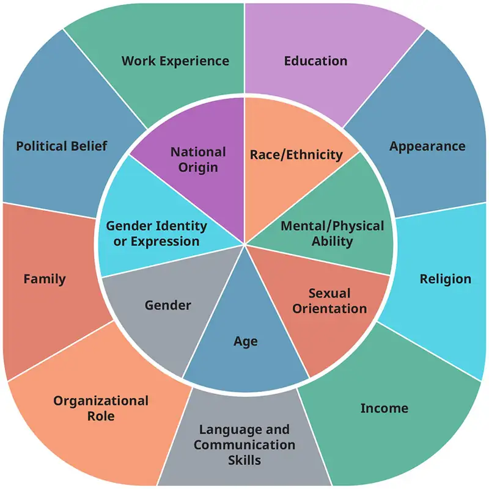
Culture of Prejudice¶
Culture of prejudice refers to the theory that prejudice is embedded in our culture. We grow up surrounded by images of stereotypes and casual expressions of racism and prejudice. Consider the casually racist imagery on grocery store shelves or the stereotypes that fill popular movies and advertisements. It is easy to see how someone living in the Northeastern United States, who may know no Mexican Americans personally, might gain a stereotyped impression from such sources as Speedy Gonzalez or Taco Bell’s talking Chihuahua. Because we are all exposed to these images and thoughts, it is impossible to know to what extent they have influenced our thought processes.
11.3 Prejudice, Discrimination, and Racism¶
Learning Objectives
By the end of this section, you should be able to:
- Explain the difference between stereotypes, prejudice, discrimination, and racism
- Identify different types of discrimination
- View racial tension through a sociological lens
It is important to learn about stereotypes before discussing the terms prejudice, discrimination, and racism that are often used interchangeably in everyday conversation. Stereotypes are oversimplified generalizations about groups of people. Stereotypes can be based on race, ethnicity, age, gender, sexual orientation—almost any characteristic. They may be positive (usually about one’s own group) but are often negative (usually toward other groups, such as when members of a dominant racial group suggest that a subordinate racial group is stupid or lazy). In either case, the stereotype is a generalization that doesn’t take individual differences into account.
Where do stereotypes come from? In fact, new stereotypes are rarely created; rather, they are recycled from subordinate groups that have assimilated into society and are reused to describe newly subordinate groups. For example, many stereotypes that are currently used to characterize new immigrants were used earlier in American history to characterize Irish and Eastern European immigrants.
Prejudice¶
Prejudice refers to the beliefs, thoughts, feelings, and attitudes someone holds about a group. A prejudice is not based on personal experience; instead, it is a prejudgment, originating outside actual experience. Recall from the chapter on Crime and Deviance that the criminalization of marijuana was based on anti-immigrant sentiment; proponents used fictional, fear-instilling stories of "reefer madness" and rampant immoral and illegal activities among Spanish-speaking people to justify new laws and harsh treatment of marijuana users. Many people who supported criminalizing marijuana had never met any of the new immigrants who were rumored to use it; the ideas were based in prejudice.
While prejudice is based in beliefs outside of experience, experience can lead people to feel that their prejudice is confirmed or justified. This is a type of confirmation bias. For example, if someone is taught to believe that a certain ethnic group has negative attributes, every negative act committed someone in that group can be seen as confirming the prejudice. Even a minor social offense committed by a member of the ethnic group, like crossing the street outside the crosswalk or talking too loudly on a bus, could confirm the prejudice.
While prejudice often originates outside experience, it isn't instinctive. Prejudice—as well as the stereotypes that lead to it and the discrimination that stems from it—is most often taught and learned. The teaching arrives in many forms, from direct instruction or indoctrination, to observation and socialization. Movies, books, charismatic speakers, and even a desire to impress others can all support the development of prejudices.
Discrimination¶
While prejudice refers to biased thinking, discrimination consists of actions against a group of people. Discrimination can be based on race, ethnicity, age, religion, health, and other categories. For example, discrimination based on race or ethnicity can take many forms, from unfair housing practices such as redlining to biased hiring systems. Overt discrimination has long been part of U.S. history. In the late nineteenth century, it was not uncommon for business owners to hang signs that read, "Help Wanted: No Irish Need Apply." And southern Jim Crow laws, with their "Whites Only" signs, exemplified overt discrimination that is not tolerated today.
Discrimination also manifests in different ways. The scenarios above are examples of individual discrimination, but other types exist. Institutional discrimination occurs when a societal system has developed with embedded disenfranchisement of a group, such as the U.S. military's historical nonacceptance of minority sexualities (the "don't ask, don't tell" policy reflected this norm).
While the form and severity of discrimination vary significantly, they are considered forms of oppression. Institutional discrimination can also include the promotion of a group's status, such in the case of privilege, which is the benefits people receive simply by being part of the dominant group.
Most people have some level of privilege, whether it has to do with health, ability, race, or gender. When discussing race, the focus is often on White privilege, which is the societal privilege that benefits White people, or those perceived to be White, over non-White people in some societies, including the United States. Most White people are willing to admit that non-White people live with a set of disadvantages due to the color of their skin. But until they gain a good degree of self-awareness, few people are willing to acknowledge the benefits they themselves receive by being a part of the dominant group. Why not? Some may feel it lessens their accomplishments, others may feel a degree of guilt, and still others may feel that admitting to privilege makes them seem like a bad or mean person. But White (or other dominant) privilege is an institutional condition, not a personal one. It exists whether the person asks for it or not. In fact, a pioneering thinker on the topic, Peggy McIntosh, noted that she didn't recognize privilege because, in fact, it was not based in meanness. Instead, it was an "invisible weightless knapsack full of special provisions" that she didn't ask for, yet from which she still benefitted (McIntosh 1989). As the reference indicates, McIntosh's first major publication about White privilege was released in 1989; many people have only become familiar with the term in recent years.
Prejudice and discrimination can overlap and intersect in many ways. To illustrate, here are four examples of how prejudice and discrimination can occur. Unprejudiced nondiscriminators are open-minded, tolerant, and accepting individuals. Unprejudiced discriminators might be those who unthinkingly practice sexism in their workplace by not considering women or gender nonconforming people for certain positions that have traditionally been held by men. Prejudiced nondiscriminators are those who hold racist beliefs but don't act on them, such as a racist store owner who serves minority customers. Prejudiced discriminators include those who actively make disparaging remarks about others or who perpetuate hate crimes.
Racism¶
Racism is a stronger type of prejudice and discrimination used to justify inequalities against individuals by maintaining that one racial category is somehow superior or inferior to others; it is a set of practices used by a racial dominant group to maximize advantages for itself by disadvantaging racial minority groups. Such practices have affected wealth gap, employment, housing discrimination, government surveillance, incarceration, drug arrests, immigration arrests, infant mortality and much more (Race Forward 2021).
Broadly, individuals belonging to minority groups experience both individual racism and systemic racism during their lifetime. While reading the following some of the common forms of racism, ask yourself, “Am I a part of this racism?” “How can I contribute to stop racism?”
- Individual or Interpersonal Racism refers to prejudice and discrimination executed by individuals consciously and unconsciously that occurs between individuals. Examples include telling a racist joke and believing in the superiority of White people.
- Systemic Racism, also called structural racism or institutional racism, is systems and structures that have procedures or processes that disadvantages racial minority groups. Systemic racism occurs in organizations as discriminatory treatments and unfair policies based on race that result in inequitable outcomes for White people over people of color. For example, a school system where students of color are distributed into underfunded schools and out of the higher-resourced schools.
- Racial Profiling is a type of systemic racism that involves the singling out of racial minorities for differential treatment, usually harsher treatment. The disparate treatment of racial minorities by law enforcement officials is a common example of racial profiling in the United States. For example, a study on the Driver's License Privilege to All Minnesota Residents from 2008 to 2010 found that the percentage of Latinos arrested was disproportionally high (Feist 2013). Similarly, the disproportionate number of Black men arrested, charged, and convicted of crimes reflect racial profiling.
- Historical Racism is economic inequality or social disparity caused by past racism. For example, African-Americans have had their opportunities in wealth, education and employment adversely affected due to the mistreatment of their ancestors during the slavery and post-slavery period (Wilson 2012).
- Cultural Racism occurs when the assumption of inferiority of one or more races is built into the culture of a society. For example, the European culture is considered supposedly more mature, evolved and rational than other cultures (Blaut 1992). A study showed that White and Asian American students with high GPAs experience greater social acceptance while Black and Native American students with high GPAs are rejected by their peers (Fuller-Rowell and Doan 2010).
- Colorism is a form of racism, in which someone believes one type of skin tone is superior or inferior to another within a racial group. For example, if an employer believes a Black employee with a darker skin tone is less capable than a Black employee with lighter skin tone, that is colorism. Studies suggest that darker skinned African Americans experience more discrimination than lighter skinned African Americans (Herring, Keith, and Horton 2004; Klonoff and Landrine 2000).
- Color-Avoidance Racism (sometimes referred to as "colorblind racism") is an avoidance of racial language by European-Americans that ignores the fact that racism continues to be an issue. The U.S. cultural narrative that typically focuses on individual racism fails to recognize systemic racism. It has arisen since the post-Civil Rights era and supports racism while avoiding any reference to race (Bonilla-Silva 2015).
How to Be an Antiracist¶
Almost all mainstream voices in the United States oppose racism. Despite this, racism is prevalent in several forms. For example, when a newspaper uses people's race to identify individuals accused of a crime, it may enhance stereotypes of a certain minority. Another example of racist practices is racial steering, in which real estate agents direct prospective homeowners toward or away from certain neighborhoods based on their race.
Racist attitudes and beliefs are often more insidious and harder to pin down than specific racist practices. They become more complex due to implicit bias (also referred to as unconscious bias) which is the process of associating stereotypes or attitudes towards categories of people without conscious awareness – which can result in unfair actions and decisions that are at odds with one’s conscious beliefs about fairness and equality (Osta and Vasquez 2021). For example, in schools we often see “honors” and “gifted” classes quickly filled with White students while the majority of Black and Latino students are placed in the lower track classes. As a result, our mind consciously and unconsciously starts to associate Black and Latino students with being less intelligent, less capable. Osta and Vasquez (2021) argue that placing the student of color into a lower and less rigorous track, we reproduce the inequity and the vicious cycle of structural racism and implicit bias continues.
![A cycle is depicted. At the center are implicit bias and structural racism, with arrows circling in order to show they connect. Around them are the three groups of words. The first is priming, associations and assumptions, and it is described by words saying that dominant narratives about race coupled with racialized structural arrangements by race all prime us to beelove that people of color are inferior to White people. The second is history, policies, practices, and its description is that race is created to justify enslaving people from Africa. Politics and practices that consolidate and protect power bestow unearned economic, cultural, and political advantage to people called White and disadvantage to people of color. The third is inequitable outcomes and racial disparities. Inequitable outcomes and experiences resulting from policy decisions in health, housing, employment, education, and life expectancy.](img/soc3e-11-03-03.webp)
If everyone becomes antiracist, breaking the vicious cycle of structural racism and implicit bias may not be far away. To be antiracist is a radical choice in the face of history, requiring a radical reorientation of our consciousness (Kendi 2019). Proponents of anti-racism indicate that we must work collaboratively within ourselves, our institutions, and our networks to challenge racism at local, national and global levels. The practice of anti-racism is everyone’s ongoing work that everyone should pursue at least the following (Carter and Snyder 2020):
- Understand and own the racist ideas in which we have been socialized and the racist biases that these ideas have created within each of us.
- Identify racist policies, practices, and procedures and replace them with antiracist policies, practices, and procedures.
Anti-racism need not be confrontational in the sense of engaging in direct arguments with people, feeling terrible about your privilege, or denying your own needs or success. In fact, many people who are a part of a minority acknowledge the need for allies from the dominant group (Melaku 2020). Understanding and owning the racist ideas, and recognizing your own privilege, is a good and brave thing.
We cannot erase racism simply by enacting laws to abolish it, because it is embedded in our complex reality that relates to educational, economic, criminal, political, and other social systems. Importantly, everyone can become antiracist by making conscious choices daily. Being racist or antiracist is not about who you are; it is about what you do (Carter and Snyder 2020).
What does it mean to you to be an “anti-racist”? How do see the recent events or protests in your community, country or somewhere else? Are they making any desired changes?
Big Picture: Racial Tensions in the United States
The death of Michael Brown in Ferguson, Missouri on August 9, 2014 illustrates racial tensions in the United States as well as the overlap between prejudice, discrimination, and institutional racism. On that day, Brown, a young unarmed Black man, was killed by a White police officer named Darren Wilson. During the incident, Wilson directed Brown and his friend to walk on the sidewalk instead of in the street. While eyewitness accounts vary, they agree that an altercation occurred between Wilson and Brown. Wilson’s version has him shooting Brown in self-defense after Brown assaulted him, while Dorian Johnson, a friend of Brown also present at the time, claimed that Brown first ran away, then turned with his hands in the air to surrender, after which Wilson shot him repeatedly (Nobles and Bosman 2014). Three autopsies independently confirmed that Brown was shot six times (Lowery and Fears 2014).
The shooting focused attention on a number of race-related tensions in the United States. First, members of the predominantly Black community viewed Brown’s death as the result of a White police officer racially profiling a Black man (Nobles and Bosman 2014). In the days after, it was revealed that only three members of the town’s fifty-three-member police force were Black (Nobles and Bosman 2014). The national dialogue shifted during the next few weeks, with some commentators pointing to a nationwide sedimentation of racial inequality and identifying redlining in Ferguson as a cause of the unbalanced racial composition in the community, in local political establishments, and in the police force (Bouie 2014). Redlining is the practice of routinely refusing mortgages for households and businesses located in predominately minority communities, while sedimentation of racial inequality describes the intergenerational impact of both practical and legalized racism that limits the abilities of Black people to accumulate wealth.
Ferguson’s racial imbalance may explain in part why, even though in 2010 only about 63 percent of its population was Black, in 2013 Black people were detained in 86 percent of stops, 92 percent of searches, and 93 percent of arrests (Missouri Attorney General’s Office 2014). In addition, de facto segregation in Ferguson’s schools, a race-based wealth gap, urban sprawl, and a Black unemployment rate three times that of the White unemployment rate worsened existing racial tensions in Ferguson while also reflecting nationwide racial inequalities (Bouie 2014).
This situation has not much changed in the United States. After Michael Brown, dozens of unarmed Black people have been shot and killed by police. Studies find no change to the racial disparity in the use of deadly force by police (Belli 2020). Do you think that racial tension can be reduced by stopping police action against racial minorities? What types of policies and practices are important to reduce racial tension? Who are responsible? Why?
11.4 Intergroup Relationships¶
Learning Objectives
By the end of this section, you should be able to:
- Explain different intergroup relations in terms of their relative levels of tolerance
- Give historical and/or contemporary examples of each type of intergroup relation
Intergroup relations (relationships between different groups of people) range along a spectrum between tolerance and intolerance. The most tolerant form of intergroup relations is pluralism, in which no distinction is made between minority and majority groups, but instead there’s equal standing. At the other end of the continuum are amalgamation, expulsion, and even genocide—stark examples of intolerant intergroup relations.
Pluralism¶
Pluralism is represented by the ideal of the United States as a “salad bowl”: a great mixture of different cultures where each culture retains its own identity and yet adds to the flavor of the whole. True pluralism is characterized by mutual respect on the part of all cultures, both dominant and subordinate, creating a multicultural environment of acceptance. In reality, true pluralism is a difficult goal to reach. In the United States, the mutual respect required by pluralism is often missing, and the nation’s past model of a melting pot posits a society where cultural differences aren’t embraced as much as erased.
Assimilation¶
Assimilation describes the process by which a minority individual or group gives up its own identity by taking on the characteristics of the dominant culture. In the United States, which has a history of welcoming and absorbing immigrants from different lands, assimilation has been a function of immigration.
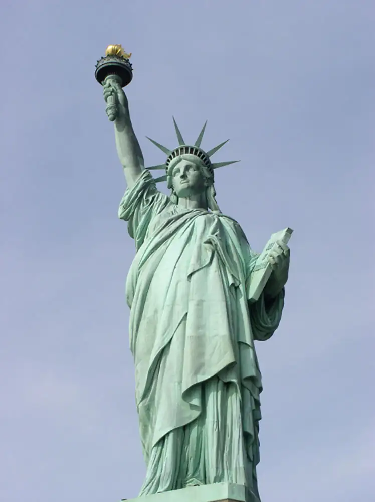
Most people in the United States have immigrant ancestors. In relatively recent history, between 1890 and 1920, the United States became home to around 24 million immigrants. In the decades since then, further waves of immigrants have come to these shores and have eventually been absorbed into U.S. culture, sometimes after facing extended periods of prejudice and discrimination. Assimilation may lead to the loss of the minority group’s cultural identity as they become absorbed into the dominant culture, but assimilation has minimal to no impact on the majority group’s cultural identity.
Some groups may keep only symbolic gestures of their original ethnicity. For instance, many Irish Americans may celebrate Saint Patrick’s Day, many Hindu Americans enjoy a Diwali festival, and many Mexican Americans may celebrate Cinco de Mayo (a May 5 acknowledgment of the Mexican victory over the French Empire at the Battle of Puebla). However, for the rest of the year, other aspects of their originating culture may be forgotten.
Assimilation is antithetical to the “salad bowl” created by pluralism; rather than maintaining their own cultural flavor, subordinate cultures give up their own traditions in order to conform to their new environment. Sociologists measure the degree to which immigrants have assimilated to a new culture with four benchmarks: socioeconomic status, spatial concentration, language assimilation, and intermarriage. When faced with racial and ethnic discrimination, it can be difficult for new immigrants to fully assimilate. Language assimilation, in particular, can be a formidable barrier, limiting employment and educational options and therefore constraining growth in socioeconomic status.
Amalgamation¶
Amalgamation is the process by which a minority group and a majority group combine to form a new group. Amalgamation creates the classic “melting pot” analogy; unlike the “salad bowl,” in which each culture retains its individuality, the “melting pot” ideal sees the combination of cultures that results in a new culture entirely.
Amalgamation in the form of miscegenation is achieved through intermarriage between races. In the United States, antimiscegenation laws, which criminalized interracial marriage, flourished in the South during the Jim Crow era. It wasn’t until 1967’s Loving v. Virginia that the last antimiscegenation law was struck from the books, making these laws unconstitutional.
Genocide¶
Genocide, the deliberate annihilation of a targeted (usually subordinate) group, is the most toxic intergroup relationship. Historically, we can see that genocide has included both the intent to exterminate a group and the function of exterminating of a group, intentional or not.
Possibly the most well-known case of genocide is Hitler’s attempt to exterminate the Jewish people in the first part of the twentieth century. Also known as the Holocaust, the explicit goal of Hitler’s “Final Solution” was the eradication of European Jewish people, as well as the destruction of other minority groups such as Catholics, people with disabilities, and LGBTQ people. With forced emigration, concentration camps, and mass executions in gas chambers, Hitler’s Nazi regime was responsible for the deaths of 12 million people, 6 million of whom were Jewish. Hitler’s intent was clear, and the high Jewish death toll certainly indicates that Hitler and his regime committed genocide. But how do we understand genocide that is not so overt and deliberate?
The treatment of the Native Americans by the European colonizers is an example of genocide committed against indigenous people. Some historians estimate that Native American populations dwindled from approximately 12 million people in the year 1500 to barely 237,000 by the year 1900 (Lewy 2004). European settlers coerced American Indians off their own lands, often causing thousands of deaths in forced removals, such as occurred in the Cherokee or Potawatomi Trail of Tears. Settlers also enslaved Native Americans and forced them to give up their religious and cultural practices. But the major cause of Native American death was neither slavery nor war nor forced removal: it was the introduction of European diseases and Native American lack of immunity to them. Smallpox, diphtheria, and measles flourished among indigenous American tribes who had no exposure to the diseases and no ability to fight them. Quite simply, these diseases decimated the tribes. The use of diseases as weapon was most likely unintentional in some cases and intentional in others. For example, during the Seven Years War, the British gave smallpox-infected blankets to the Native tribes in order to "reduce them," and this and similar practices likely continued throughout the centuries-long assault on the Native American people.
Genocide is not a just a historical concept; it is practiced even in the twenty- first century. For example, ethnic and geographic conflicts in the Darfur region of Sudan have led to hundreds of thousands of deaths. As part of an ongoing land conflict, the Sudanese government and their state-sponsored Janjaweed militia have led a campaign of killing, forced displacement, and systematic rape of Darfuri people. Although a treaty was signed in 2011, the peace is fragile.
Expulsion¶
Expulsion refers to a subordinate group being forced, by a dominant group, to leave a certain area or country. As seen in the examples of the Trail of Tears and the Holocaust, expulsion can be a factor in genocide. However, it can also stand on its own as a destructive group interaction. Expulsion has often occurred historically with an ethnic or racial basis. In the United States, President Franklin D. Roosevelt issued Executive Order 9066 in 1942, after the Japanese government’s attack on Pearl Harbor. The Order authorized the establishment of internment camps for anyone with as little as one-eighth Japanese ancestry (i.e., one great-grandparent who was Japanese). Over 120,000 legal Japanese residents and Japanese U.S. citizens, many of them children, were held in these camps for up to four years, despite the fact that there was never any evidence of collusion or espionage. (In fact, many Japanese Americans continued to demonstrate their loyalty to the United States by serving in the U.S. military during the War.) In the 1990s, the U.S. executive branch issued a formal apology for this expulsion; reparation efforts continue today.
Segregation¶
Segregation refers to the physical separation of two groups, particularly in residence, but also in workplace and social functions. It is important to distinguish between de jure segregation (segregation that is enforced by law) and de facto segregation (segregation that occurs without laws but because of other factors). A stark example of de jure segregation is the apartheid movement of South Africa, which existed from 1948 to 1994. Under apartheid, Black South Africans were stripped of their civil rights and forcibly relocated to areas that segregated them physically from their White compatriots. Only after decades of degradation, violent uprisings, and international advocacy was apartheid finally abolished.
De jure segregation occurred in the United States for many years after the Civil War. During this time, many former Confederate states passed Jim Crow laws that required segregated facilities for Black and White people. These laws were codified in 1896’s landmark Supreme Court case Plessy v. Ferguson, which stated that “separate but equal” facilities were constitutional. For the next five decades, Black people were subjected to legalized discrimination, forced to live, work, and go to school in separate—but unequal—facilities. It wasn’t until 1954 and the Brown v. Board of Education case that the Supreme Court declared that “separate educational facilities are inherently unequal,” thus ending de jure segregation in the United States.
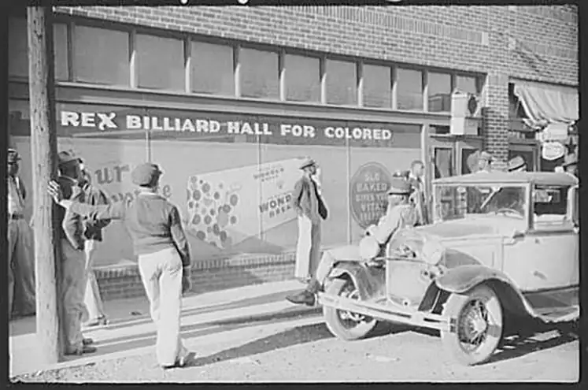
De facto segregation, however, cannot be abolished by any court mandate. Few institutions desegregated as a result of Brown; in fact, government and even military intervention was necessary to enforce the ruling, and it took the Civil Rights Act and other laws to formalize the equality. Segregation is still alive and well in the United States, with different racial or ethnic groups often segregated by neighborhood, borough, or parish. Sociologists use segregation indices to measure racial segregation of different races in different areas. The indices employ a scale from zero to 100, where zero is the most integrated and 100 is the least. In the New York metropolitan area, for instance, the Black-White segregation index was seventy-nine for the years 2005–2009. This means that 79 percent of either Black or White people would have to move in order for each neighborhood to have the same racial balance as the whole metro region (Population Studies Center 2010).
11.5 Race and Ethnicity in the United States¶
Learning Objectives
By the end of this section, you should be able to:
- Compare and contrast the different experiences of various ethnic groups in the United States
- Apply theories of intergroup relations, race, and ethnicity to different subordinate groups
When colonists came to the New World, they found a land that did not need “discovering” since it was already inhabited. While the first wave of immigrants came from Western Europe, eventually the bulk of people entering North America were from Northern Europe, then Eastern Europe, then Latin America and Asia. And let us not forget the forced immigration of enslaved Africans. Most of these groups underwent a period of disenfranchisement in which they were relegated to the bottom of the social hierarchy before they managed (for those who could) to achieve social mobility. Because of this achievement, the U.S. is still a “dream destination” for millions of people living in other countries. Many thousands of people, including children, arrive here every year both documented and undocumented. Most Americans welcome and support new immigrants wholeheartedly. For example, the Development, Relief, and Education for Alien Minors (DREAM) Act introduced in 2001 provides a means for undocumented immigrants who arrived in the U.S. as children to gain a pathway to permanent legal status. Similarly, the Deferred Action for Childhood Arrivals (DACA) introduced in 2012 gives young undocumented immigrants a work permit and protection from deportation (Georgetown Law 2021). Today, the U.S. society is multicultural, multiracial and multiethnic that is composed of people from several national origins.
The U.S. Census Bureau collects racial data in accordance with guidelines provided by the U.S. Office of Management and Budget (OMB 2016). These data are based on self-identification; generally reflect a social definition of race recognized in this country that include racial and national origin or sociocultural groups. People may choose to report more than one race to indicate their racial mixture, such as “American Indian” and “White.” People who identify their origin as Hispanic, Latino, or Spanish may be of any race. OMB requires five minimum categories: White, Black or African American, American Indian or Alaska Native, Asian, and Native Hawaiian or Other Pacific Islander. The U.S. Census Bureau’s QuickFacts as of July 1, 2019 showed that over 328 million people representing various racial groups were living in the U.S. (Table 11.1).
Table 11.1 Percentage of Race and Hispanic Origin Population 2019 (Table courtesy of U.S. Census Bureau)
| Population estimates, July 1, 2019, (V2019) | 328,239,523 |
| Race and Hispanic Origin | Percentage (%) |
| White alone | 76.3 |
| Black or African American alone | 13.4 |
| American Indian and Alaska Native alone | 1.3 |
| Asian alone | 5.9 |
| Native Hawaiian and Other Pacific Islander alone | 0.2 |
| Two or More Races | 2.8 |
| Hispanic or Latino | 18.5 |
| White alone, not Hispanic or Latino | 60.1 |
To clarify the terminology in the table, note that the U.S. Census Bureau defines racial groups as follows:
- White – A person having origins in any of the original peoples of Europe, the Middle East, or North Africa.
- Black or African American – A person having origins in any of the Black racial groups of Africa.
- American Indian or Alaska Native – A person having origins in any of the original peoples of North and South America (including Central America) and who maintains tribal affiliation or community attachment.
- Asian – A person having origins in any of the original peoples of the Far East, Southeast Asia, or the Indian subcontinent including, for example, Cambodia, China, India, Japan, Korea, Malaysia, Pakistan, the Philippine Islands, Thailand, and Vietnam.
- Native Hawaiian or Other Pacific Islander – A person having origins in any of the original peoples of Hawaii, Guam, Samoa, or other Pacific Islands.
Information on race is required for many Federal programs and is critical in making policy decisions, particularly for civil rights including racial justice. States use these data to meet legislative redistricting principles. Race data also are used to promote equal employment opportunities and to assess racial disparities in health and environmental risks that demonstrates the extent to which this multiculturality is embraced. The many manifestations of multiculturalism carry significant political repercussions. The sections below will describe how several groups became part of U.S. society, discuss the history of intergroup relations for each faction, and assess each group’s status today.
Native Americans¶
Native Americans are Indigenous peoples, the only nonimmigrant people in the United States. According to the National Congress of American Indians, Native Americans are “All Native people of the United States and its trust territories (i.e., American Indians, Alaska Natives, Native Hawaiians, Chamorros, and American Samoans), as well as persons from Canadian First Nations and Indigenous communities in Mexico and Central and South America who are U.S. residents (NCAI 2020, p. 11).” Native Americans once numbered in the millions but by 2010 made up only 0.9 percent of U.S. populace; see above (U.S. Census 2010). Currently, about 2.9 million people identify themselves as Native American alone, while an additional 2.3 million identify themselves as Native American mixed with another ethnic group (Norris, Vines, and Hoeffel 2012).
Sociology in the Real World: Sports Teams with Native American Names
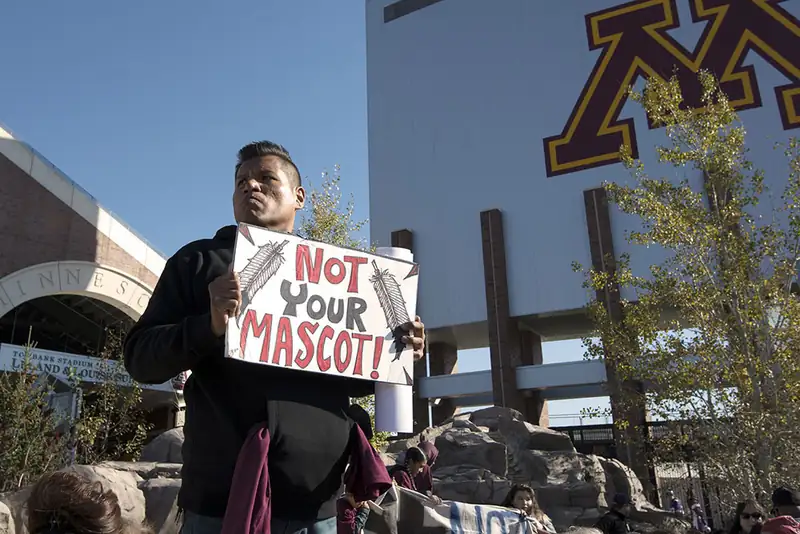
The sports world abounds with team names like the Indians, the Warriors, the Braves, and even the Savages and Redskins. These names arise from historically prejudiced views of Native Americans as fierce, brave, and strong: attributes that would be beneficial to a sports team, but are not necessarily beneficial to people in the United States who should be seen as more than that.
Since the civil rights movement of the 1960s, the National Congress of American Indians (NCAI) has been campaigning against the use of such mascots, asserting that the “warrior savage myth . . . reinforces the racist view that Indians are uncivilized and uneducated and it has been used to justify policies of forced assimilation and destruction of Indian culture” (NCAI Resolution #TUL-05-087 2005). The campaign has met with limited success. While some teams have changed their names, hundreds of professional, college, and K–12 school teams still have names derived from this stereotype. Another group, American Indian Cultural Support (AICS), is especially concerned with the use of such names at K–12 schools, influencing children when they should be gaining a fuller and more realistic understanding of Native Americans than such stereotypes supply.
After years of pressure and with a wider sense of social justice and cultural sensitivity, the Washington Football Team removed their offensive name before the 2020 season, and the Cleveland Major League Baseball team announced it would change its name after the 2021 season.
What do you think about such names? Should they be allowed or banned? What argument would a symbolic interactionist make on this topic?
History of Intergroup Relations¶
Native American culture prior to European settlement is referred to as Pre-Columbian: that is, prior to the coming of Christopher Columbus in 1492. Mistakenly believing that he had landed in the East Indies, Columbus named the indigenous people “Indians,” a name that has persisted for centuries despite being a geographical misnomer and one used to blanket hundreds of sovereign tribal nations (NCAI 2020).
The history of intergroup relations between European colonists and Native Americans is a brutal one. As discussed in the section on genocide, the effect of European settlement of the Americans was to nearly destroy the indigenous population. And although Native Americans’ lack of immunity to European diseases caused the most deaths, overt mistreatment and massacres of Native Americans by Europeans were devastating as well.
From the first Spanish colonists to the French, English, and Dutch who followed, European settlers took what land they wanted and expanded across the continent at will. If indigenous people tried to retain their stewardship of the land, Europeans fought them off with superior weapons. Europeans’ domination of the Americas was indeed a conquest; one scholar points out that Native Americans are the only minority group in the United States whose subordination occurred purely through conquest by the dominant group (Marger 1993).
After the establishment of the United States government, discrimination against Native Americans was codified and formalized in a series of laws intended to subjugate them and keep them from gaining any power. Some of the most impactful laws are as follows:
- The Indian Removal Act of 1830 forced the relocation of any Native tribes east of the Mississippi River to lands west of the river.
- The Indian Appropriation Acts funded further removals and declared that no Indian tribe could be recognized as an independent nation, tribe, or power with which the U.S. government would have to make treaties. This made it even easier for the U.S. government to take land it wanted.
- The Dawes Act of 1887 reversed the policy of isolating Native Americans on reservations, instead forcing them onto individual properties that were intermingled with White settlers, thereby reducing their capacity for power as a group.
Native American culture was further eroded by the establishment of boarding schools in the late nineteenth century. These schools, run by both Christian missionaries and the United States government, had the express purpose of “civilizing” Native American children and assimilating them into White society. The boarding schools were located off-reservation to ensure that children were separated from their families and culture. Schools forced children to cut their hair, speak English, and practice Christianity. Physical and sexual abuses were rampant for decades; only in 1987 did the Bureau of Indian Affairs issue a policy on sexual abuse in boarding schools. Some scholars argue that many of the problems that Native Americans face today result from almost a century of mistreatment at these boarding schools.
Current Status¶
The eradication of Native American culture continued until the 1960s, when Native Americans were able to participate in and benefit from the civil rights movement. The Indian Civil Rights Act of 1968 guaranteed Indian tribes most of the rights of the United States Bill of Rights. New laws like the Indian Self-Determination Act of 1975 and the Education Assistance Act of the same year recognized tribal governments and gave them more power. Indian boarding schools have dwindled to only a few, and Native American cultural groups are striving to preserve and maintain old traditions to keep them from being lost forever. Today, Native Americans are citizens of three sovereigns: their tribal nations, the United States, and the state in which they reside (NCAI 2020).
However, Native Americans (some of whom wish to be called American Indians so as to avoid the “savage” connotations of the term “native”) still suffer the effects of centuries of degradation. Long-term poverty, inadequate education, cultural dislocation, and high rates of unemployment contribute to Native American populations falling to the bottom of the economic spectrum. Native Americans also suffer disproportionately with lower life expectancies than most groups in the United States.
African Americans¶
As discussed in the section on race, the term African American can be a misnomer for many individuals. Many people with dark skin may have their more recent roots in Europe or the Caribbean, seeing themselves as Dominican American or Dutch American, for example. Further, actual immigrants from Africa may feel that they have more of a claim to the term African American than those who are many generations removed from ancestors who originally came to this country.
The U.S. Census Bureau (2019) estimates that at least 13.4 percent of the United States' population is Black.
How and Why They Came¶
African Americans are the exemplar minority group in the United States whose ancestors did not come here by choice. A Dutch sea captain brought the first Africans to the Virginia colony of Jamestown in 1619 and sold them as indentured servants. (Indentured servants are people who are committed to work for a certain period of time, typically without formal pay). This was not an uncommon practice for either Black or White people, and indentured servants were in high demand. For the next century, Black and White indentured servants worked side by side. But the growing agricultural economy demanded greater and cheaper labor, and by 1705, Virginia passed the slave codes declaring that any foreign-born non-Christian could be enslaved, and that enslaved people were considered property.
The next 150 years saw the rise of U.S. slavery, with Black Africans being kidnapped from their own lands and shipped to the New World on the trans-Atlantic journey known as the Middle Passage. Once in the Americas, the Black population grew until U.S.-born Black people outnumbered those born in Africa. But colonial (and later, U.S.) slave codes declared that the child of an enslaved person was also an enslaved person, so the slave class was created. By 1808, the slave trade was internal in the United States, with enslaved people being bought and sold across state lines like livestock.
History of Intergroup Relations¶
There is no starker illustration of the dominant-subordinate group relationship than that of slavery. In order to justify their severely discriminatory behavior, slaveholders and their supporters viewed Black people as innately inferior. Enslaved people were denied even the most basic rights of citizenship, a crucial factor for slaveholders and their supporters. Slavery poses an excellent example of conflict theory’s perspective on race relations; the dominant group needed complete control over the subordinate group in order to maintain its power. Whippings, executions, rapes, and denial of schooling and health care were widely practiced.
Slavery eventually became an issue over which the nation divided into geographically and ideologically distinct factions, leading to the Civil War. And while the abolition of slavery on moral grounds was certainly a catalyst to war, it was not the only driving force. Students of U.S. history will know that the institution of slavery was crucial to the Southern economy, whose production of crops like rice, cotton, and tobacco relied on the virtually limitless and cheap labor that slavery provided. In contrast, the North didn’t benefit economically from slavery, resulting in an economic disparity tied to racial/political issues.
A century later, the civil rights movement was characterized by boycotts, marches, sit-ins, and freedom rides: demonstrations by a subordinate group and their supporters that would no longer willingly submit to domination. The major blow to America’s formally institutionalized racism was the Civil Rights Act of 1964. This Act, which is still important today, banned discrimination based on race, color, religion, sex, or national origin.
Current Status¶
Although government-sponsored, formalized discrimination against African Americans has been outlawed, true equality does not yet exist. The National Urban League’s 2020 Equality Index reports that Black people’s overall equality level with White people has been generally improving. Measuring standards of civic engagement, economics, education, and others, Black people had an equality level of 71 percent in 2010 and had an equality level of 74 percent in 2020. The Index, which has been published since 2005, notes a growing trend of increased inequality with White people, especially in the areas of unemployment, insurance coverage, and incarceration. Black people also trail White people considerably in the areas of economics, health, and education (National Urban League 2020).
To what degree do racism and prejudice contribute to this continued inequality? The answer is complex. 2008 saw the election of this country’s first African American president: Barack Obama. Despite being popularly identified as Black, we should note that President Obama is of a mixed background that is equally White, and although all presidents have been publicly mocked at times (Gerald Ford was depicted as a klutz, Bill Clinton as someone who could not control his libido), a startling percentage of the critiques of Obama were based on his race. In a number of other chapters, we discuss racial disparities in healthcare, education, incarceration, and other areas.
Although Black people have come a long way from slavery, the echoes of centuries of disempowerment are still evident.
Sociology in the Real World: Black People Are Still Seeking Racial Justice
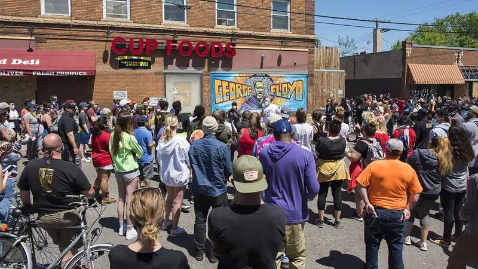
In 2020, racial justice movements expanded their protests against incidents of police brutality and all racially motivated violence against Black people. Black Lives Matter (BLM), an organization founded in 2013 in response to the acquittal of George Zimmerman, was a core part of the movement to protest the killings of George Floyd, Breonna Taylor and other Black victims of police violence. Millions of people from all racial backgrounds participated in the movement directly or indirectly, demanding justice for the victims and their families, redistributing police department funding to drive more holistic and community-driven law enforcement, addressing systemic racism, and introducing new laws to punish police officers who kill innocent people.
The racial justice movement has been able to achieve some these demands. For example, Minneapolis City Council unanimously approved $27 million settlement to the family of George Floyd in March 2021, the largest pre-trial settlement in a wrongful death case ever for the life of a Black person (Shapiro and Lloyd, 2021). $500,000 from the settlement amount is intended to enhance the business district in the area where Floyd died. Floyd, a 46-year-old Black man, was arrested and murdered in Minneapolis on May 25, 2020. Do you think such settlement is adequate to provide justice for the victims, their families and communities affected by the horrific racism? What else should be done more? How can you contribute to bring desired changes?
Asian Americans¶
Asian Americans represent a great diversity of cultures and backgrounds. The experience of a Japanese American whose family has been in the United States for three generations will be drastically different from a Laotian American who has only been in the United States for a few years. This section primarily discusses Chinese, Japanese, Korean, and Vietnamese immigrants and shows the differences between their experiences. The most recent estimate from the U.S. Census Bureau (2019) suggest about 5.9 percent of the population identify themselves as Asian.
How and Why They Came¶
The national and ethnic diversity of Asian American immigration history is reflected in the variety of their experiences in joining U.S. society. Asian immigrants have come to the United States in waves, at different times, and for different reasons.
The first Asian immigrants to come to the United States in the mid-nineteenth century were Chinese. These immigrants were primarily men whose intention was to work for several years in order to earn incomes to support their families in China. Their main destination was the American West, where the Gold Rush was drawing people with its lure of abundant money. The construction of the Transcontinental Railroad was underway at this time, and the Central Pacific section hired thousands of migrant Chinese men to complete the laying of rails across the rugged Sierra Nevada mountain range. Chinese men also engaged in other manual labor like mining and agricultural work. The work was grueling and underpaid, but like many immigrants, they persevered.
Japanese immigration began in the 1880s, on the heels of the Chinese Exclusion Act of 1882. Many Japanese immigrants came to Hawaii to participate in the sugar industry; others came to the mainland, especially to California. Unlike the Chinese, however, the Japanese had a strong government that negotiated with the U.S. government to ensure the well-being of their immigrants. Japanese men were able to bring their wives and families to the United States, and were thus able to produce second- and third-generation Japanese Americans more quickly than their Chinese counterparts.
The most recent large-scale Asian immigration came from Korea and Vietnam and largely took place during the second half of the twentieth century. While Korean immigration has been fairly gradual, Vietnamese immigration occurred primarily post-1975, after the fall of Saigon and the establishment of restrictive communist policies in Vietnam. Whereas many Asian immigrants came to the United States to seek better economic opportunities, Vietnamese immigrants came as political refugees, seeking asylum from harsh conditions in their homeland. The Refugee Act of 1980 helped them to find a place to settle in the United States.
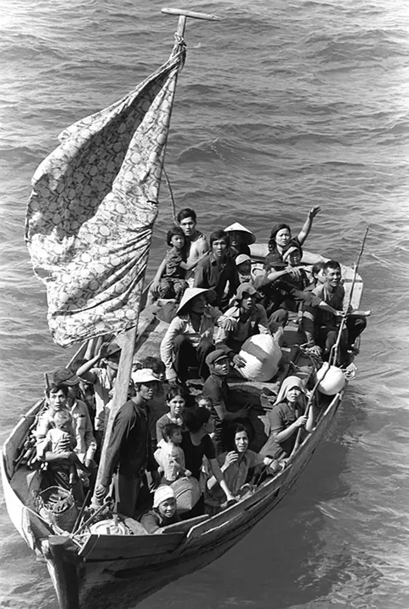
History of Intergroup Relations¶
Chinese immigration came to an abrupt end with the Chinese Exclusion Act of 1882. This act was a result of anti-Chinese sentiment burgeoned by a depressed economy and loss of jobs. White workers blamed Chinese migrants for taking jobs, and the passage of the Act meant the number of Chinese workers decreased. Chinese men did not have the funds to return to China or to bring their families to the United States, so they remained physically and culturally segregated in the Chinatowns of large cities. Later legislation, the Immigration Act of 1924, further curtailed Chinese immigration. The Act included the race-based National Origins Act, which was aimed at keeping U.S. ethnic stock as undiluted as possible by reducing “undesirable” immigrants. It was not until after the Immigration and Nationality Act of 1965 that Chinese immigration again increased, and many Chinese families were reunited.
Although Japanese Americans have deep, long-reaching roots in the United States, their history here has not always been smooth. The California Alien Land Law of 1913 was aimed at them and other Asian immigrants, and it prohibited immigrants from owning land. An even uglier action was the Japanese internment camps of World War II, discussed earlier as an illustration of expulsion.
Current Status¶
Asian Americans certainly have been subject to their share of racial prejudice, despite the seemingly positive stereotype as the model minority. The model minority stereotype is applied to a minority group that is seen as reaching significant educational, professional, and socioeconomic levels without challenging the existing establishment.
This stereotype is typically applied to Asian groups in the United States, and it can result in unrealistic expectations by putting a stigma on members of this group that do not meet the expectations. Stereotyping all Asians as smart and capable can also lead to a lack of much-needed government assistance and to educational and professional discrimination.
Sociology in the Real World: Hate Crimes Against Asian Americans
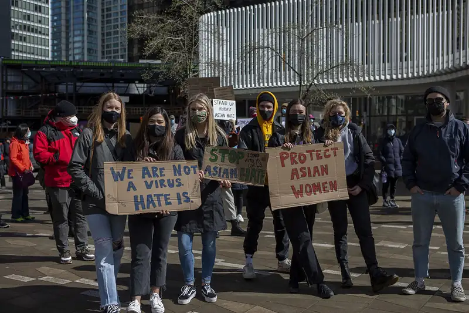
Asian Americans across the United States experienced a significant increase in hate crimes, harassment and discrimination tied to the spread of the COVID-19 pandemic. Community trackers recorded more than 3,000 anti-Asian attacks nationwide during 2020 in comparison to about 100 such incidents recorded annually in the prior years (Abdollah 2021). Asian American leaders have been urging community members to report any criminal incidents, demanding local law enforcement agencies for greater enforcement of existing hate-crime laws.
Many Asian Americans feel their communities have long been ignored by mainstream politics, media and entertainment although they are considered as a “model minority.” Recently, Asian American journalists are sharing their own stories of discrimination on social media and a growing chorus of federal lawmakers are demanding actions. Do you think you can do something to stop violence against Asian Americans? Can any of your actions not only help Asian Americans but also wider people in the United States?
White Americans¶
White Americans are the dominant racial group in the United States. According to the U.S. Census Bureau (2019), 76.3 percent of U.S. adults currently identify themselves as White alone. In this section, we will focus on German, Irish, Italian, and Eastern European immigrants.
Why They Came¶
White ethnic Europeans formed the second and third great waves of immigration, from the early nineteenth century to the mid-twentieth century. They joined a newly minted United States that was primarily made up of White Protestants from England. While most immigrants came searching for a better life, their experiences were not all the same.
The first major influx of European immigrants came from Germany and Ireland, starting in the 1820s. Germans came both for economic opportunity and to escape political unrest and military conscription, especially after the Revolutions of 1848. Many German immigrants of this period were political refugees: liberals who wanted to escape from an oppressive government. They were well-off enough to make their way inland, and they formed heavily German enclaves in the Midwest that exist to this day.
The Irish immigrants of the same time period were not always as well off financially, especially after the Irish Potato Famine of 1845. Irish immigrants settled mainly in the cities of the East Coast, where they were employed as laborers and where they faced significant discrimination.
German and Irish immigration continued into the late 19th century and earlier 20th century, at which point the numbers for Southern and Eastern European immigrants started growing as well. Italians, mainly from the Southern part of the country, began arriving in large numbers in the 1890s. Eastern European immigrants—people from Russia, Poland, Bulgaria, and Austria-Hungary—started arriving around the same time. Many of these Eastern Europeans were peasants forced into a hardscrabble existence in their native lands; political unrest, land shortages, and crop failures drove them to seek better opportunities in the United States. The Eastern European immigration wave also included Jewish people escaping pogroms (anti-Jewish massacres) of Eastern Europe and the Pale of Settlement in what was then Poland and Russia.
History of Intergroup Relations¶
In a broad sense, German immigrants were not victimized to the same degree as many of the other subordinate groups this section discusses. While they may not have been welcomed with open arms, they were able to settle in enclaves and establish roots. A notable exception to this was during the lead up to World War I and through World War II, when anti-German sentiment was virulent.
Irish immigrants, many of whom were very poor, were more of a working poor class than the Germans. In Ireland, the English had oppressed the Irish for centuries, eradicating their language and culture and discriminating against their religion (Catholicism). Although the Irish had a larger population than the English, they were a subordinate group. This dynamic reached into the New World, where Anglo-Americans saw Irish immigrants as a race apart: dirty, lacking ambition, and suitable for only the most menial jobs. In fact, Irish immigrants were subject to criticism identical to that with which the dominant group characterized African Americans. By necessity, Irish immigrants formed tight communities segregated from their Anglo neighbors.
The later wave of immigrants from Southern and Eastern Europe was also subject to intense discrimination and prejudice. In particular, the dominant group—which now included second- and third-generation Germans and Irish—saw Italian immigrants as the dregs of Europe and worried about the purity of the American race (Myers 2007). Italian immigrants lived in segregated slums in Northeastern cities, and in some cases were even victims of violence and lynching similar to what African Americans endured. They undertook physical labor at lower pay than other workers, often doing the dangerous work that other laborers were reluctant to take on, such as earth moving and construction.
Current Status¶
German Americans are the largest group among White ethnic Americans in the country. For many years, German Americans endeavored to maintain a strong cultural identity, but they are now culturally assimilated into the dominant culture.
There are now more Irish Americans in the United States than there are Irish in Ireland. One of the country’s largest cultural groups, Irish Americans have slowly achieved acceptance and assimilation into the dominant group.
Myers (2007) states that Italian Americans’ cultural assimilation is “almost complete, but with remnants of ethnicity.” The presence of “Little Italy” neighborhoods—originally segregated slums where Italians congregated in the nineteenth century—exist today. While tourists flock to the saints’ festivals in Little Italies, most Italian Americans have moved to the suburbs at the same rate as other White groups. Italian Americans also became more accepted after World War II, partly because of other, newer migrating groups and partly because of their significant contribution to the war effort, which saw over 500,000 Italian Americans join the military and fight against the Axis powers, which included Italy itself.
As you will see in the Religion chapter, Jewish people were also a core immigrant group to the United States. They often resided in tight-knit neighborhoods in a similar way to Italian people. Jewish identity is interesting and varied, in that many Jewish people consider themselves as members of a collective ethnic group as well as a religion, and many Jewish people feel connected by their ancestry as well as their religion. In fact, much of the data around the number of Jewish Americans is presented with caveats about different definitions and identifications of what it means to be Jewish (Lipka 2013).
As we have seen, there is no minority group that fits easily in a category or that can be described simply. While sociologists believe that individual experiences can often be understood in light of their social characteristics (such as race, class, or gender), we must balance this perspective with awareness that no two individuals’ experiences are alike. Making generalizations can lead to stereotypes and prejudice. The same is true for White ethnic Americans, who come from diverse backgrounds and have had a great variety of experiences.
Social Policy and Debate: Thinking about White Ethnic Americans: Arab Americans
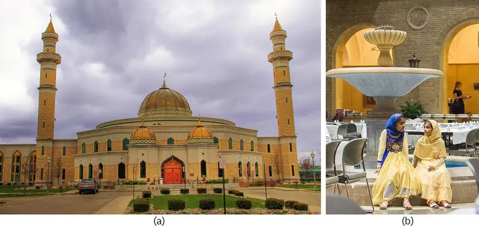
The first Arab immigrants came to this country in the late nineteenth and early twentieth centuries. They were predominantly Syrian, Lebanese, and Jordanian Christians, and they came to escape persecution and to make a better life. These early immigrants and their descendants, who were more likely to think of themselves as Syrian or Lebanese than Arab, represent almost half of the Arab American population today (Myers 2007). Restrictive immigration policies from the 1920s until 1965 curtailed immigration, but Arab immigration since 1965 has been steady. Immigrants from this time period have been more likely to be Muslim and more highly educated, escaping political unrest and looking for better opportunities.
The United States was deeply affected by the terrorist attacks of September 11, 2001 and racial profiling has proceeded against Arab Americans since then. Particularly when engaged in air travel, being young and Arab-looking is enough to warrant a special search or detainment. This Islamophobia (irrational fear of or hatred against Muslims) does not show signs of abating. Arab Americans represent all religious practices, despite the stereotype that all Arabic people practice Islam. Geographically, the Arab region comprises the Middle East and parts of North Africa (MENA). People whose ancestry lies in that area or who speak primarily Arabic may consider themselves Arabs.
The U.S. Census has struggled with the issue of Arab identity. The 2020 Census, as in previous years, did not offer a (MENA) category under the question of race. The US government rejected a push by Arab American advocates and organizations to add the new category, meaning that people stemming from the Arab region will be counted as "white" (Harb 2018). Do you think an addition of MENA category is appropriate to reduce prejudice and discrimination against Arab Americans? What other categories should be added to promote racial justice in the United States?
Hispanic Americans¶
The U.S. Census Bureau uses two ethnicities in collecting and reporting data: “Hispanic or Latino” and “Not Hispanic or Latino." Hispanic or Latino is a person of Cuban, Mexican, Puerto Rican, South or Central American, or other Spanish culture or origin regardless of race. Hispanic Americans have a wide range of backgrounds and nationalities.
The segment of the U.S. population that self-identifies as Hispanic in 2019 was recently estimated at 18.5 percent of the total (U.S. Census Bureau 2019). According to the 2010 U.S. Census, about 75 percent of the respondents who identify as Hispanic report being of Mexican, Puerto Rican, or Cuban origin. Remember that the U.S. Census allows people to report as being more than one ethnicity.
Not only are there wide differences among the different origins that make up the Hispanic American population, but there are also different names for the group itself. Hence, there have been some disagreements over whether Hispanic or Latino is the correct term for a group this diverse, and whether it would be better for people to refer to themselves as being of their origin specifically, for example, Mexican American or Dominican American. This section will compare the experiences of Mexican Americans and Cuban Americans.
How and Why They Came¶
Mexican Americans form the largest Hispanic subgroup and also the oldest. Mexican migration to the United States started in the early 1900s in response to the need for inexepensive agricultural labor. Mexican migration was often circular; workers would stay for a few years and then go back to Mexico with more money than they could have made in their country of origin. The length of Mexico’s shared border with the United States has made immigration easier than for many other immigrant groups.
Cuban Americans are the second-largest Hispanic subgroup, and their history is quite different from that of Mexican Americans. The main wave of Cuban immigration to the United States started after Fidel Castro came to power in 1959 and reached its crest with the Mariel boatlift in 1980. Castro’s Cuban Revolution ushered in an era of communism that continues to this day. To avoid having their assets seized by the government, many wealthy and educated Cubans migrated north, generally to the Miami area.
History of Intergroup Relations¶
For several decades, Mexican workers crossed the long border into the United States, both "documented" and "undocumented" to work in the fields that provided produce for the developing United States. Western growers needed a steady supply of labor, and the 1940s and 1950s saw the official federal Bracero Program (bracero is Spanish for strong-arm) that offered protection to Mexican guest workers. Interestingly, 1954 also saw the enactment of “Operation Wetback,” which deported thousands of illegal Mexican workers. From these examples, we can see the U.S. treatment of immigration from Mexico has been ambivalent at best.
Sociologist Douglas Massey (2006) suggests that although the average standard of living than in Mexico may be lower in the United States, it is not so low as to make permanent migration the goal of most Mexicans. However, the strengthening of the border that began with 1986’s Immigration Reform and Control Act has made one-way migration the rule for most Mexicans. Massey argues that the rise of illegal one-way immigration of Mexicans is a direct outcome of the law that was intended to reduce it.
Cuban Americans, perhaps because of their relative wealth and education level at the time of immigration, have fared better than many immigrants. Further, because they were fleeing a Communist country, they were given refugee status and offered protection and social services. The Cuban Migration Agreement of 1995 has curtailed legal immigration from Cuba, leading many Cubans to try to immigrate illegally by boat. According to a 2009 report from the Congressional Research Service, the U.S. government applied a “wet foot/dry foot” policy toward Cuban immigrants; Cubans who were intercepted while still at sea were returned to Cuba, while those who reached the shore were permitted to stay in the United States. This policy ended in 2017.
Current Status¶
Mexican Americans, especially those who are here undocumented, are at the center of a national debate about immigration. Myers (2007) observes that no other minority group (except the Chinese) has immigrated to the United States in such an environment of legal dispute. He notes that in some years, three times as many Mexican immigrants may have entered the United States undocumented as those who arrived documented. It should be noted that this is due to enormous disparity of economic opportunity on two sides of an open border, not because of any inherent inclination to break laws. In his report, “Measuring Immigrant Assimilation in the United States,” Jacob Vigdor (2008) states that Mexican immigrants experience relatively low rates of economic and civic assimilation. He further suggests that “the slow rates of economic and civic assimilation set Mexicans apart from other immigrants, and may reflect the fact that the large numbers of Mexican immigrants residing in the United States undocumented have few opportunities to advance themselves along these dimensions.”
By contrast, Cuban Americans are often seen as a model minority group within the larger Hispanic group. Many Cubans had higher socioeconomic status when they arrived in this country, and their anti-Communist agenda has made them welcome refugees to this country. In south Florida, especially, Cuban Americans are active in local politics and professional life. As with Asian Americans, however, being a model minority can mask the issue of powerlessness that these minority groups face in U.S. society.
Social Policy and Debate: Arizona’s Senate Bill 1070
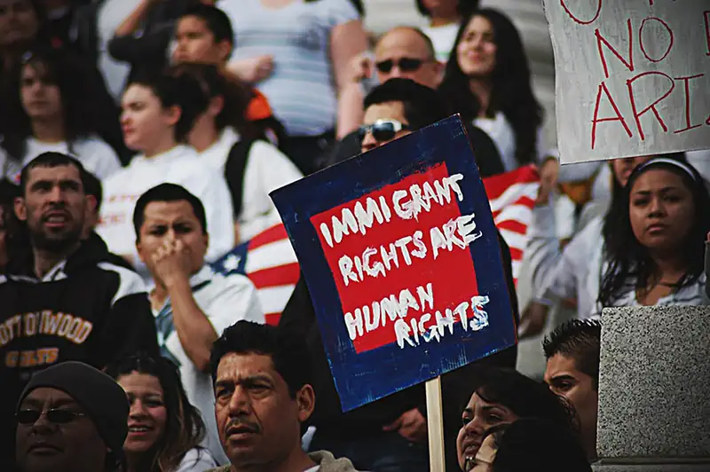
As both legal and unathorized immigrants, and with high population numbers, Mexican Americans are often the target of stereotyping, racism, and discrimination. A harsh example of this is in Arizona, where a stringent immigration law—known as SB 1070 (for Senate Bill 1070)—caused a nationwide controversy. Formally titled "Support Our Law Enforcement and Safe Neighborhoods Act, the law requires that during a lawful stop, detention, or arrest, Arizona police officers must establish the immigration status of anyone they suspect may be here illegally. The law makes it a crime for individuals to fail to have documents confirming their legal status, and it gives police officers the right to detain people they suspect may be in the country illegally.
To many, the most troublesome aspect of this law is the latitude it affords police officers in terms of whose citizenship they may question. Having “reasonable suspicion that the person is an alien who is unlawfully present in the United States” is reason enough to demand immigration papers (Senate Bill 1070 2010). Critics say this law will encourage racial profiling (the illegal practice of law enforcement using race as a basis for suspecting someone of a crime), making it hazardous to be caught “Driving While Brown,” a takeoff on the legal term Driving While Intoxicated (DWI) or the slang reference of “Driving While Black.” Driving While Brown refers to the likelihood of getting pulled over just for being nonWhite.
SB 1070 has been the subject of many lawsuits, from parties as diverse as Arizona police officers, the American Civil Liberties Union, and even the federal government, which sued on the basis of Arizona contradicting federal immigration laws (ACLU 2011). In June 2012, the U.S. Supreme Court ruled on Arizona vs. United States regarding SB 1070. The Court upheld the provision requiring immigration status checks during law enforcement stops but struck down three other provisions. The Court ruled that these provisions violated the Supremacy Clause of the U.S. Constitution.
Chapter Review¶
Key Terms¶
- amalgamation
- the process by which a minority group and a majority group combine to form a new group
- antiracist
- a person who opposes racism and acts for racial justice
- assimilation
- the process by which a minority individual or group takes on the characteristics of the dominant culture
- colorism
- the belief that one type of skin tone is superior or inferior to another within a racial group
- culture of prejudice
- the theory that prejudice is embedded in our culture
- discrimination
- prejudiced action against a group of people
- dominant group
- a group of people who have more power in a society than any of the subordinate groups
- ethnicity
- shared culture, which may include heritage, language, religion, and more
- expulsion
- the act of a dominant group forcing a subordinate group to leave a certain area or even the country
- genocide
- the deliberate annihilation of a targeted (usually subordinate) group
- intersection theory
- theory that suggests we cannot separate the effects of race, class, gender, sexual orientation, and other attributes
- minority group
- any group of people who are singled out from the others for differential and unequal treatment
- model minority
- the stereotype applied to a minority group that is seen as reaching higher educational, professional, and socioeconomic levels without protest against the majority establishment
- pluralism
- the ideal of the United States as a “salad bowl:” a mixture of different cultures where each culture retains its own identity and yet adds to the “flavor” of the whole
- prejudice
- biased thought based on flawed assumptions about a group of people
- racial profiling
- the use by law enforcement of race alone to determine whether to stop and detain someone
- racial steering
- the act of real estate agents directing prospective homeowners toward or away from certain neighborhoods based on their race
- racism
- a set of attitudes, beliefs, and practices that are used to justify the belief that one racial category is somehow superior or inferior to others
- redlining
- the practice of routinely refusing mortgages for households and business located in predominately minority communities
- scapegoat theory
- a theory that suggests that the dominant group will displace its unfocused aggression onto a subordinate group
- sedimentation of racial inequality
- the intergenerational impact of de facto and de jure racism that limits the abilities of Black people to accumulate wealth
- segregation
- the physical separation of two groups, particularly in residence, but also in workplace and social functions
- social construction of race
- the school of thought that race is not biologically identifiable
- stereotypes
- oversimplified ideas about groups of people
- subordinate group
- a group of people who have less power than the dominant group
- systemic racism
- racism embedded in social institutions; also referred to as institutional racism and structural racism
- White privilege
- the societal privilege that benefits White people, or those perceived to be White, over non-White people in some societies, including the United States
Summary¶
11.1 Racial, Ethnic, and Minority Groups¶
Race is fundamentally a social construct. Ethnicity is a term that describes shared culture and national origin. Minority groups are defined by their lack of power.
11.2 Theoretical Perspectives on Race and Ethnicity¶
Functionalist views of race study the role dominant and subordinate groups play to create a stable social structure. Conflict theorists examine power disparities and struggles between various racial and ethnic groups. Interactionists see race and ethnicity as important sources of individual identity and social symbolism. The concept of culture of prejudice recognizes that all people are subject to stereotypes that are ingrained in their culture.
11.3 Prejudice, Discrimination, and Racism¶
Stereotypes are oversimplified ideas about groups of people. Prejudice refers to thoughts and feelings, while discrimination refers to actions. Racism is both prejudice and discrimination due to the belief that one race is inherently superior or inferior to other races. Antiracists fight against the systems of racism by employing antiracist policies and practices in institutions and communities.
11.4 Intergroup Relationships¶
Intergroup relations range from a tolerant approach of pluralism to intolerance as severe as genocide. In pluralism, groups retain their own identity. In assimilation, groups conform to the identity of the dominant group. In amalgamation, groups combine to form a new group identity.
11.5 Race and Ethnicity in the United States¶
The history of the U.S. people contains an infinite variety of experiences that sociologist understand follow patterns. From the indigenous people who first inhabited these lands to the waves of immigrants over the past 500 years, migration is an experience with many shared characteristics. Most groups have experienced various degrees of prejudice and discrimination as they have gone through the process of assimilation.
References¶
References
CNN Library. (February 17, 2021). "Trayvon Martin Shooting Fast Facts." CNN US. Retrieved March 18, 2021 (http://www.cnn.com/2013/06/05/us/trayvon-martin-shooting-fast-facts/)
Davis, Guy. (June 1, 2020). “George Floyd protests go international as demonstrations break out across the world.” ABC News. Retrieved March 18, 2021 (https://abcnews.go.com/International/george-floyd-protests-international-demonstrations-break-world/story?id=70991689)
11.1 Racial, Ethnic, and Minority Groups
Caver, Helen Bush, and Mary T. Williams. 2011. “Creoles.” Multicultural America, Countries and Their Cultures, December 7. Retrieved February 13, 2012 (http://www.everyculture.com/multi/Bu-Dr/Creoles.html).
Dickens, William T. and Flynn, James R. 2006. "Black Americans Reduce the Racial IQ Gap." Psychological Science. Volume 17 Number 10. (http://www.iapsych.com/iqmr/fe/LinkedDocuments/dickens2006a.pdf)
Dollard, J., et al. 1939. Frustration and Aggression. New Haven, CT: Yale University Press.
Graves, Joseph. 2003. The Emperor's New Clothes: Biological Theories of Race at the Millennium. New Brunswick, NJ: Rutgers University Press.
MacCord, Kate. 2014. "Johann Friedrich Blumenbach (1752-1840)." Embryo Project Encyclopedia. Retrieved March 18, 2021 (http://embryo.asu.edu/handle/10776/7512).
Martinez, Daniel E. and Gonzalez, Kelsey E. 2019. "Panethnicity as a reactive identity: primary panethnic identification among Latino-Hispanics in the United States." Ethnic and Racial Studies. Volume 44 2021. (https://doi.org/10.1080/01419870.2020.1752392)
Omi, Michael, and Howard Winant. 1994. Racial Formation in the United States: from the 1960s to the 1990s (2nd ed.). New York, NY: Routledge.
Park, Jerry Z. 2008. "Second-Generation Asian American Pan-Ethnic Identity: Pluralized Meanings of a Racial Label." Sociological Perspectives. Volume 51, Issue 3. DOI: 10.1525/sop.2008.51.3.541
Rao, Sameer. 2018. "Can East Asian Americans Reclaim 'Yellow' for Themselves." Color Lines. September 28 2018. (https://www.colorlines.com/articles/read-can-east-asian-americans-reclaim-yellow-themselves)
Seipel, Brooke. 2020 "Why the AP and Others Are Now Capitalizing the 'B' in Black" The Hill. June 19 2020. (https://thehill.com/homenews/media/503642-why-the-ap-and-others-are-now-capitalizing-the-b-in-black)
Wagley, Charles, and Marvin Harris. 1958. Minorities in the New World: Six Case Studies. New York: Columbia University Press.
Wirth, Louis. 1945. “The Problem of Minority Groups.” The Science of Man in the World Crisis, edited by R. Linton: 347. In Hacker, Helen Mayer. 1951. Women as a Minority Group. Retrieved December 1, 2011 (http://media.pfeiffer.edu/lridener/courses/womminor.html).
World Health Organization. 2011. “Elder Maltreatment.” Fact Sheet N-357. Retrieved December 19, 2011 (http://www.who.int/mediacentre/factsheets/fs357/en/index.html).
11.2 Theoretical Perspectives on Race and Ethnicity
Collins, Patricia Hill. 2008. Distinguishing Features of Black Feminist Thought. London: Routledge.
Durkheim, Émile. 1982 [1895]. The Rules of the Sociological Method. Translated by W.D. Halls. New York: Free Press.
Nash, Manning. 1964. “Race and the Ideology of Race.” Current Anthropology 3(3): 285–288.
Rose, Arnold. 1958 [1951]. The Roots of Prejudice, fifth edition. Paris, France: Unesco. Retrieved November 19 (http://unesdoc.unesco.org/images/0007/000733/073342eo.pdf).
11.3 Prejudice, Discrimination, and Racism
Blaut, James M. 1992. "The theory of cultural racism." Antipode. 24(4): 289-299.
Bonilla-Silva, Eduardo. 2015. The structure of racism in color-blind, “post-racial” America. American Behavioral Scientist. 59:1358-76.
Bouie, Jamelle. (August 19, 2014). "Why the Fires in Ferguson Won't End Soon." Slate.com. Retrieved October 9, 2014 (http://www.slate.com/articles/news_and_politics/politics/2014/08/ferguson_protests_over_michael_brown_won_t_end_soon_the_black_community.2.html).
Carter, Jordan, and Ian Snyder. (July 21, 2020). “What Does It Mean to Be an Anti-racist?” National League of Cities (NLC). Retrieved March 18, 2021 (https://www.nlc.org/article/2020/07/21/what-does-it-mean-to-be-an-anti-racist/).
Feist, Benjamin, Teresa Nelson, and Ian Bratlie. 2013. "Racial Profiling in Greater Minnesota and the Case for Expanding the Driver's License Privilege to All Minnesota Residents." Law Raza. 5(1): 3.
Fuller-Rowell, Thomas E., and Stacey N. Doan. 2010. “The social costs of academic success across ethnic groups.” Child development. 81(6): 1696-1713.
Herring, C., V. M. Keith, and H.D. Horton. 2004. Skin Deep: How Race and Complexion Matter in the “Color-Blind” Era (Ed.), Chicago, IL: University of Illinois Press.
Hudson, David L. 2009. “Students Lose Confederate-Flag Purse Case in 5th Circuit.” Retrieved December 7, 2011 (http://www.firstamendmentcenter.org/students-lose-confederate-flag-purse-case-in-5th-circuit).
Kendi, Ibram X. 2019. How to be an antiracist. One world.
Klonoff, E., and H. Landrine. 2000. “Is Skin Color a Marker for Racial Discrimination? Explaining the Skin Color-Hypertension Relationship.” Journal of Behavioral Medicine. 23: 329–338.
Landor, Antoinette M., Leslie Gordon Simons, Ronald L. Simons, Gene H. Brody, Chalandra M. Bryant, Frederick X. Gibbons, Ellen M. Granberg, and Janet N. Melby. 2013. "Exploring the impact of skin tone on family dynamics and race-related outcomes." Journal of Family Psychology. 27 (5): 817-826.
Lowery, Wesley and Darryl Fears. (August 31, 2014). "Michael Brown and Dorian Johnson, the friend who witnessed his shooting". The Washington Post. Retrieved October 9 , 2014. (http://www.washingtonpost.com/politics/michael-brown-and-dorian-johnson-the-friend-who-witnessed-his-shooting/2014/08/31/bb9b47ba-2ee2-11e4-9b98-848790384093_story.html).
McIntosh, Peggy. 1988. “White Privilege: Unpacking the Invisible Knapsack.” White Privilege and Male Privilege: A Personal Account of Coming to See Correspondences Through Work in Women’s Studies. Wellesley, MA: Wellesley College Center for Research on Women.
Melaku, Tsedele and Beeman, Angie and Smith, David G. and Johnson, Brad W. 2020. "Be A Better Ally."
Missouri Attorney General’s Office. (n.d.) "Racial Profiling Report." Retrieved October 9, 2014 (http://ago.mo.gov/VehicleStops/2013/reports/161.pdf).
Osta, Kathleen, and Hugh Vasquez. 2021. “Implicit Bias and Structural Racialization”. National Equity Project. Retrieved March 18, 2021 (https://www.nationalequityproject.org/frameworks/implicit-bias-structural-racialization).
Race Forward. 2021. “What Is Systemic Racism?” Retrieved March 18, 2021 (https://www.raceforward.org/videos/systemic-racism).
Nobles, Frances, and Julie Bosman. (August 17, 2014). "Autopsy Shows Michael Brown Was Struck at Least Six Times." The New York Times. Retrieved October 9, 2014 (http://www.nytimes.com/2014/08/18/us/michael-brown-autopsy-shows-he-was-shot-at-least-6-times.html).
Wilson, William Julius. 2012. The Truly Disadvantaged: The inner city, the underclass, and public policy. University of Chicago Press.
Wilson, William Julius. 2012. The Truly Disadvantaged: The inner city, the underclass, and public policy. University of Chicago Press.
Yerevanci. 2013. "Public Opinion of Interracial Marriage in the United States." Wikimedia Commons. Retrieved December 23, 2014 (http://commons.wikimedia.org/wiki/File:Public_opinion_of_interracial_marriage_in_the_United_States.png).
11.4 Intergroup Relationships
Asi, Maryam, and Daniel Beaulieu. 2013. “Arab Households in the United States: 2006–2010.” U.S. Census Bureau. Retrieved November 19, 2014 (http://www.census.gov/prod/2013pubs/acsbr10-20.pdf).
Lewy, Guenter. 2004. “Were American Indians the Victims of Genocide?” Retrieved December 6, 2011 (http://hnn.us/articles/7302.html).
Norris, Tina, Paula L. Vines, and Elizabeth M. Hoeffel. 2012. “The American Indian and Alaska Native Population: 2010.” U.S. Census Bureau. Retrieved November 19, 2014 (http://www.census.gov/prod/cen2010/briefs/c2010br-10.pdf).
Population Studies Center. 2010. “New Racial Segregation Measures for States and Large Metropolitan Areas: Analysis of the 2005–2009 American Community Survey.” Population Studies Center: Institute for Social Research. Retrieved November 29, 2011 (http://www.psc.isr.umich.edu/dis/census/segregation.html).
Tatz, Colin. 2006. "Confronting Australian Genocide." The Indigenous Experience: Global Perspectives. Edited by Roger Maaka and Chris Andersen. Toronto, Canada: Canadian Scholars Press.
U.S. Census Bureau. 2014. “State and County Quickfacts.” Retrieved November 19, 2014 (http://quickfacts.census.gov/qfd/states/00000.html).
11.5 Race and Ethnicity in the United States
Abdollah, Tami and Trevor Hughes. (February 27, 2021). “Hate crimes against Asian Americans are on the rise. Here's what activists, lawmakers and police are doing to stop the violence.” USA TODAY. Retrieved March 18, 2021 (https://www.usatoday.com/story/news/nation/2021/02/27/asian-hate-crimes-attacks-fueled-covid-19-racism-threaten-asians/4566376001/).
ACLU. 2011. “Appellate Court Upholds Decision Blocking Arizona’s Extreme Racial Profiling Law.” American Civil Liberties Union. Retrieved December 8, 2011 (http://www.aclu.org/immigrants-rights/appellate-court-upholds-decision-blocking-arizona-s-extreme-racial-profiling-law-0).
American Indian Cultural Support. 2005. “Mascots: Racism in Schools by State.” Retrieved December 8, 2011 (http://www.aics.org/mascot/mascot.html (http://www.aics.org/mascot/mascot.html).
Frimpong, Kwadwo. (November 12, 2020). “Black people are still seeking racial justice – why and what to do about it.” The Brookings Institution. Retrieved March 18, 2021 (https://www.brookings.edu/blog/how-we-rise/2020/11/12/black-people-are-still-seeking-racial-justice-why-and-what-to-do-about-it/).
Georgetown Law Library. 2021. “DACA and the DREAM Act.” Retrieved March 18, 2021 (https://guides.ll.georgetown.edu/c.php?g=592919&p=4170929).
Greely, Andrew M. 1972. That Most Distressful Nation: The Taming of the American Irish. Chicago: Quadrangle Books.
Harb, Ali. (January 27, 2018). "US Census fails to add MENA category: Arabs to remain “White” in count." Middle East Eye. Retrieved March 18, 2021 (https://www.middleeasteye.net/news/us-census-fails-add-mena-category-arabs-remain-white-count).
Lewy, Guenter. 2004. "Were American Indians the Victims of Genocide?" Retrieved December 6, 2011 (http://hnn.us/articles/7302.html).
Lipka, Michael. 2016. "A Closer Look At Jewish Identity in Israel and the U.S." Pew Research Center. March 16 2016. (https://www.pewresearch.org/fact-tank/2016/03/16/a-closer-look-at-jewish-identity-in-israel-and-the-u-s/)
Marger, Martin. 2003. Race and Ethnic Relations: American and Global Perspectives. Belmont, CA: Wadsworth.
Massey, Douglas S. 2006. “Seeing Mexican Immigration Clearly.” Cato Unbound. Retrieved December 4, 2011 (http://www.cato-unbound.org/2006/08/20/douglas-s-massey/seeing-mexican-immigration-clearly/).
Myers, John P. 2007. Dominant-Minority Relations in America. Boston: Pearson.
National Congress of American Indians. 2005. “The National Congress of American Indians Resolution #TUL-05-087: Support for NCAA Ban on ‘Indian’ Mascots.” Retrieved December 8, 2011 (http://www.ncai.org/attachments/Resolution_dZoHILXNEzXOuYlebzAihFwqFzfNnTHDGJVwjaujdNvnsFtxUVd_TUL-05-087.pdf).
National Congress of American Indians (NCAI). 2020. “Tribal Nations and the United States: An Introduction.” Retrieved March 18, 2021 (https://www.ncai.org/tribalnations/introduction/Indian_Country_101_Updated_February_2019.pdf).
Office of Management and Budget. 2016. "Standards for maintaining, collecting, and presenting federal data on race and ethnicity." Federal Register. 81(190): 67398-58790. Retrieved March 18, 2021 (https://www.govinfo.gov/content/pkg/FR-2016-09-30/pdf/2016-23672.pdf).
Senate Bill 1070. 2010. State of Arizona. Retrieved December 8, 2011 (http://www.azleg.gov/legtext/49leg/2r/bills/sb1070s.pdf).
Shapiro, Emily and Whitney Lloyd. (March 12, 2021). “$27 million settlement for George Floyd's family approved by Minneapolis City Council.” ABC News. Retrieved March 18, 2021 (https://abcnews.go.com/US/27-million-settlement-george-floyds-family-approved-minneapolis/story?id=76419755).
Tatz, Colin. 2006. "Confronting Australian Genocide." Pp. 125-140 in The Indigenous Experience: Global Perspectives. Edited by Roger Maaka and Chris Andersen. Toronto, Canada: Canadian Scholars.
U.S. Census Bureau. 2010. “State and County Quickfacts.” Retrieved February 22, 2012 (http://quickfacts.census.gov/qfd/states/00000.html).
U.S. Census Bureau. (July 1, 2019). “Quick Facts.” Retrieved March 18, 2021 (https://www.census.gov/quickfacts/fact/dashboard/US).
U.S. Department of Homeland Security. 2010. “Persons Obtaining Legal Permanent Resident Status by Region and Selected Country of Last Residence: Fiscal Years 1820 to 2010.” Yearbook of Immigration Statistics. Retrieved December 6, 2011 (http://www.dhs.gov/files/statistics/publications/LPR10.shtm).
Vigdor, Jacob L. 2008. “Measuring Immigrant Assimilation in the United States.” Manhattan Institute for Policy Research Civic Report 53. Retrieved December 4, 2011 (http://www.manhattan-institute.org/html/cr_53.htm).
Section Quiz¶
11.1 Racial, Ethnic, and Minority Groups¶
1. The racial term “African American” can refer to:
- a Black person living in the United States
- people whose ancestors came to the United States through the slave trade
- a White person who originated in Africa and now lives in the United States
- any of the above
Answer
D
2. What is the one defining feature of a minority group?
- Self-definition
- Numerical minority
- Lack of power
- Strong cultural identity
Answer
C
3. Ethnicity describes shared:
- beliefs
- language
- religion
- any of the above
Answer
D
4. Which of the following is an example of a numerical majority being treated as a subordinate group?
- Jewish people in Germany
- Creoles in New Orleans
- White people in Brazil
- Black people under apartheid in South Africa
Answer
D
5. Scapegoat theory shows that:
- subordinate groups blame dominant groups for their problems
- dominant groups blame subordinate groups for their problems
- some people are predisposed to prejudice
- all of the above
Answer
B
11.2 Theoretical Perspectives on Race and Ethnicity¶
6. As a White person in the United States, being reasonably sure that you will be dealing with authority figures of the same race as you is a result of:
- intersection theory
- conflict theory
- White privilege
- scapegoating theory
Answer
C
7. Speedy Gonzalez is an example of:
- intersection theory
- stereotyping
- interactionist view
- culture of prejudice
Answer
B
11.3 Prejudice, Discrimination, and Racism¶
8. Stereotypes can be based on:
- race
- ethnicity
- gender
- all of the above
Answer
D
9. What is discrimination?
- Biased thoughts against an individual or group
- Biased actions against an individual or group
- Belief that a race different from yours is inferior
- Another word for stereotyping
Answer
B
10. Which of the following is the best explanation of racism as a social fact?
- It needs to be eradicated by laws.
- It is like a magic pill.
- It does not need the actions of individuals to continue.
- None of the above
Answer
C
11.4 Intergroup Relationships¶
11. Which intergroup relation displays the least tolerance?
- Segregation
- Assimilation
- Genocide
- Expulsion
Answer
C
12. What doctrine justified legal segregation in the South?
- Jim Crow
- Plessy v. Ferguson
- De jure
- Separate but equal
Answer
D
13. What intergroup relationship is represented by the “salad bowl” metaphor?
- Assimilation
- Pluralism
- Amalgamation
- Segregation
Answer
B
14. Amalgamation is represented by the _____________ metaphor.
- melting pot
- Statue of Liberty
- salad bowl
- separate but equal
Answer
A
11.5 Race and Ethnicity in the United States¶
15. What makes Native Americans unique as a subordinate group in the United States?
- They are the only group that experienced expulsion.
- They are the only group that was segregated.
- They are the only group that was enslaved.
- They are the only group that is indigenous to the United States.
Answer
D
16. Which subordinate group is often referred to as the “model minority?”
- African Americans
- Asian Americans
- White ethnic Americans
- Native Americans
Answer
B
17. Which federal act or program was designed to allow more Hispanic American immigration, not block it?
- The Bracero Program
- Immigration Reform and Control Act
- Operation Wetback
- SB 1070
Answer
A
18. Many Arab Americans face _______________, especially after 9/11.
- racism
- segregation
- Islamophobia
- prejudice
Answer
C
19. Why did most White ethnic Americans come to the United States?
- For a better life
- To escape oppression
- Because they were forced out of their own countries
- a and b only
Answer
D
Short Answer¶
11.1 Racial, Ethnic, and Minority Groups¶
20. Why do you think the term “minority” has persisted when the word “subordinate” is more descriptive?
21. How do you describe your ethnicity? Do you include your family’s country of origin? Do you consider yourself multiethnic? How does your ethnicity compare to that of the people you spend most of your time with?
11.2 Theoretical Perspectives on Race and Ethnicity¶
22. How do redlining and racial steering contribute to institutionalized racism?
23. Give an example of stereotyping that you see in everyday life. Explain what would need to happen for this to be eliminated.
11.3 Prejudice, Discrimination, and Racism¶
24. Give three examples of White privilege. Do you know people who have experienced this? From what perspective?
25. What is the worst example of culture of prejudice you can think of? What are your reasons for thinking it is the worst?
11.4 Intergroup Relationships¶
26. Do you believe immigration laws should foster an approach of pluralism, assimilation, or amalgamation? Which perspective do you think is most supported by current U.S. immigration policies?
27. Which intergroup relation do you think is the most beneficial to the subordinate group? To society as a whole? Why?
11.5 Race and Ethnicity in the United States¶
28. In your opinion, which group had the easiest time coming to this country? Which group had the hardest time? Why?
29. Which group has made the most socioeconomic gains? Why do you think that group has had more success than others have?
Further Research¶
11.1 Racial, Ethnic, and Minority Groups¶
Explore aspects of race and ethnicity at PBS’s site, “What Is Race?”.
11.2 Theoretical Perspectives on Race and Ethnicity¶
Are you aware of your own or others' privilege? Watch this TED Talk on White privilege to explore the concept.
11.3 Prejudice, Discrimination, and Racism¶
How far should First Amendment rights extend? Read more about the subject at the First Amendment Center.
Learn more about institutional racism at the Southern Poverty Law Center's website.
Learn more about how prejudice develops by watching the short documentary "Eye of the Storm"
11.4 Intergroup Relationships¶
So you think you know your own assumptions? Check and find out with the Implicit Association Test
What do you know about the treatment of Australia’s aboriginal population? Find out more by viewing the feature-length documentary Our Generation.
11.5 Race and Ethnicity in the United States¶
Are people interested in reclaiming their ethnic identities? Read the article The White Ethnic Revival and decide.
What is the current racial composition of the United States? Review up-to-the minute statistics at the United States Census Bureau.
Adapted from Introduction to Sociology 3e by OpenStax, licensed under CC BY 4.0. Access the original for free at openstax.org. Changes: converted to the web reading format of The Open Book Project.